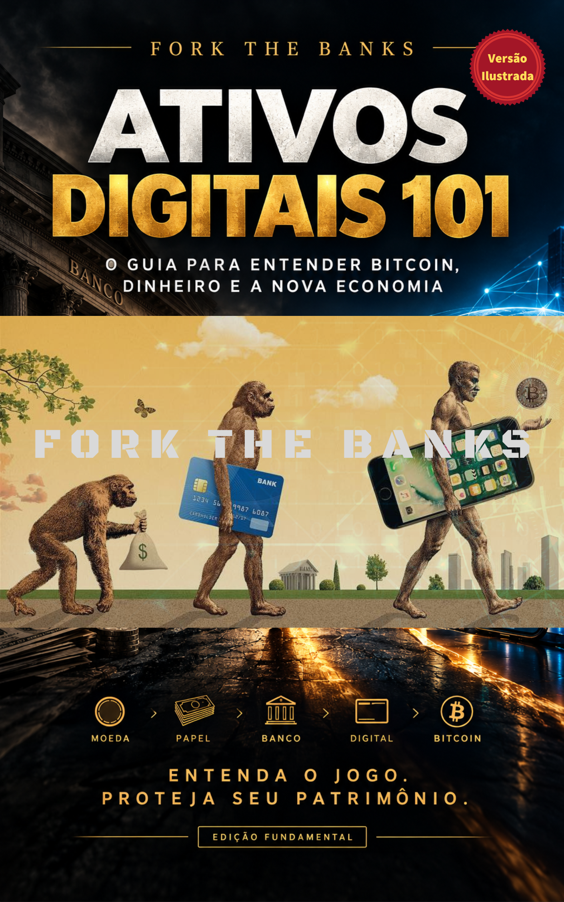

Entenda o
ativo.
Comece distinguindo rede, unidade de conta, volatilidade, risco e os motivos pelos quais diferentes pessoas se interessam por ativos digitais.
Se você está entrando no universo dos ativos digitais, comece pelo mais importante: entender como proteger, armazenar e controlar aquilo que é seu.
Acessar o e-book gratuito ↗ Conteúdo educacional. Não é recomendação de investimento, indicação de compra ou aconselhamento financeiro.
Bitcoin é dinheiro que ninguém pode tomar sem a sua permissão. Ele não pode ser desvalorizado pela inflação nem confiscado, porque nenhuma pessoa, empresa ou governo o controla.
Bitcoin é dinheiro digital regido por um código de computador executado em milhares de computadores ao redor do mundo. Esse código é executado separadamente por milhares de indivíduos e organizações distintos. Essa base distribuída de código e pessoas é, em última análise, o que confere ao Bitcoin suas fortes garantias contra apreensão e inflação.
O Bitcoin é o primeiro sistema monetário já criado com uma política monetária que qualquer pessoa pode entender e na qual pode confiar, porque nenhum indivíduo ou organização tem a capacidade de alterá-la. Quando o Bitcoin foi lançado em 2009, sua política monetária foi definida em seu código inicial como uma oferta fixa de 21.000.000 bitcoins. Cópias desse código estão agora em execução em todo o mundo, trabalhando juntas para processar transações de bitcoin a cada segundo de cada dia. Ao contrário de qualquer outro sistema monetário digital, não há um ponto central de controle que faça alterações na oferta monetária.
Essa natureza distribuída e a oferta fixa conferem ao Bitcoin propriedades semelhantes às do ouro, mas em formato eletrônico e digital. Isso o torna adequado para a economia moderna e permite outras funcionalidades que não são possíveis com ativos físicos. Uma maneira de conceber o bitcoin é como “ouro digital”, mas existem muitas outras formas de pensar sobre ele.
Com o Bitcoin, você controla totalmente seus bitcoins e ninguém pode interferir na sua capacidade de usá-los.
Até o surgimento do Bitcoin, todo dinheiro eletrônico e transações digitais precisavam ser gerenciados por alguma autoridade, fosse um banco, uma empresa ou um governo. Sempre havia alguém no meio da transação, com a capacidade de aprová-la ou rejeitá-la, e a moeda utilizada sempre precisava ser controlada por um emissor central que controlava totalmente a política monetária (ou seja, geralmente uma moeda governamental como o dólar americano ou o euro).
Com o Bitcoin, isso não acontece. Quando você quiser usá-lo, basta conectar o software da sua carteira à internet e permitir que ele se comunique com a rede Bitcoin como um todo. Você não precisa “fazer login” em nenhum serviço nem permitir que outra pessoa emita transações em seu nome. Combinado com a política monetária algorítmica do Bitcoin, isso significa que você controla totalmente seus bitcoins e ninguém pode interferir na sua capacidade de usá-los ou inflacionar seu valor por meio da política monetária.
O objetivo inicial não é dominar todos os termos. É saber o suficiente para fazer escolhas conscientes e continuar aprendendo.
Comece distinguindo rede, unidade de conta, volatilidade, risco e os motivos pelos quais diferentes pessoas se interessam por ativos digitais.
Ter acesso ao preço de um ativo e controlar os meios de acesso são coisas diferentes. Aprenda a reconhecer responsabilidades antes de assumir uma.
Segurança é processo: proteger informações, verificar endereços, registrar decisões e saber onde pedir ajuda qualificada quando necessário.
Use esta sequência como um mapa de estudo. Cada etapa reduz a chance de tomar decisões motivadas por urgência, marketing ou medo de ficar de fora.
Consulte o glossário e a Cryptopedia para criar uma base comum antes de comparar produtos ou estratégias.
Reconheça o que você entende, o que ainda não entende e quais decisões precisam de tempo ou apoio profissional apropriado.
Conheça as categorias de carteiras e os critérios de escolha sem presumir que uma ferramenta serve para todos os contextos.
Transforme aprendizado em hábitos: verificação, registro, atualização e cuidado com informações sensíveis.